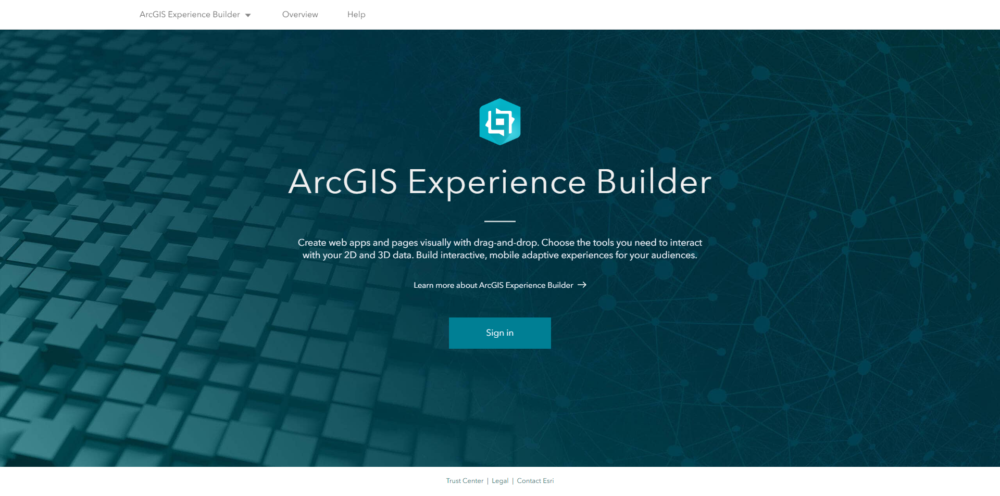

ArcGIS Experience Builder: Customizing and Extending
Sam Matenaer (Esri PS | Midwest Delivery Center) & Shawn Goulet (Esri PS | Atlantic Delivery Center)
Slides:
https://shawnmgoulet.github.io/2024-dev-summit-arcgis-exb-customizing-extending/slides/
Intro to Experience Builder
What is ArcGIS Experience Builder
|
ArcGIS Experience Builder empowers you to quickly transform your data into compelling web apps and pages
|

|
ArcGIS Experience Builder Editions
|


|
Run developer edition
Custom widgets
Creating a Widget
Demo
Creating a custom widget
Code collaboration
With your development team
Deployment
Deployment automation
Dev ops
Auto-build demo
https://github.com/shawnmgoulet/experience-builder-devops-example
Connect With Us On Social
And Join the Conversation Using #DevSummit